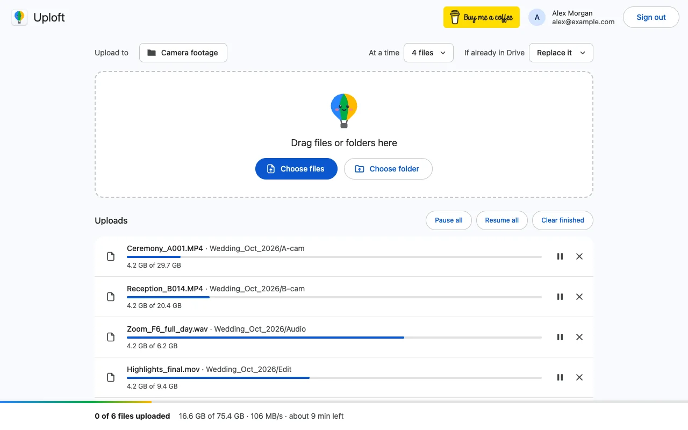

How long does it take to upload 1 TB to Google Drive, and how do I do it?
Published · Updated · By Sai Nath
At 20 Mbps, 1 TB takes about 4 days 15 hours to upload to Google Drive; at 100 Mbps, about 22 hours. The sum is 1,000 GB × 8,000 ÷ Mbps. Google Workspace users can send only 750 GB in 24 hours, so even a fast line needs two days. The account needs 1 TB of free storage too.
This guide comes from the maker of Uploft, the Chrome extension mentioned below. Google's limits link to Google's own pages and were checked on 29 October 2026; what the extension does comes from its source code. The times are arithmetic, not measured speeds.
How long does 1 TB take at different speeds?
It depends only on your upload speed, the figure a speed test labels "upload", not the download one. These sums use decimal units, where 1 TB is 1,000 GB and 1 GB is 1,000 MB, and a byte is 8 bits.
Take 20 Mbps. 1 TB is 1,000 GB × 8,000 = 8,000,000 megabits. Divide by the speed: 8,000,000 ÷ 20 = 400,000 seconds. Divide by 3,600 and that is 111.1 hours, or 4 days 15 hours.
| Upload speed | Seconds | Time |
|---|---|---|
| 10 Mbps | 800,000 | 9 days 6 hours |
| 20 Mbps | 400,000 | 4 days 15 hours |
| 50 Mbps | 160,000 | 1 day 20 hours |
| 100 Mbps | 80,000 | 22 hours |
| 500 Mbps | 16,000 | 4 hours 27 minutes |
Check one row by hand: at 50 Mbps, 8,000,000 ÷ 50 = 160,000 seconds ÷ 3,600 = 44.4 hours, which is 1 day 20 hours. Real uploads run a little slower than the best case, and much slower when something else uses the connection. For the reasons, see how long a Google Drive upload takes.
How do I upload 1 TB to Google Drive?
Check the storage and the daily limit first, split the data into batches, then upload each batch with something that survives a closed tab or a restart. With Uploft:
- Confirm the account has room. In Drive, click Storage in the left-hand menu (see the storage section below).
- Split the 1 TB into batches of about 700 GB or less if the account is a Google Workspace one (see the daily limit section below).
- Click the extension's toolbar icon, then Upload files to Drive, and sign in with Google.
- Click Choose folder or Choose files and pick the first batch. Uploads go to a folder called "Uploft" in My Drive.
- Under At a time, pick how many files go up together (1 to 6; the default is 3). Under If already in Drive, pick Skip it, Replace it or Keep both.
- Leave the computer on and the uploader tab open. The setting Keep the computer awake is on by default.
- When the batch finishes, or Drive reports the daily limit, add the next batch.

How many days under the 750 GB daily limit?
For a Google Workspace user, at least two days. Google says each user can upload and copy 750 GB to Drive within 24 hours and, after that, can't upload or copy more files until the limit refreshes, which it says happens within 24 hours. 1,000 GB ÷ 750 GB = 1.33, so round up to 2 days.
Whether the cap matters depends on speed. To send 750 GB in a day you need 750 × 8,000 ÷ 86,400 = about 69.4 Mbps held all day. Below that, the connection is the limit and the cap never bites: at 20 Mbps you send about 216 GB a day (20 × 86,400 ÷ 8,000), so 1 TB takes 1,000 ÷ 216 = 4.6 days of sending. At 100 Mbps the cap decides: about 750 GB goes up in 16 hours 40 minutes, then you wait for the limit to refresh, then the last 250 GB takes about 5 hours 33 minutes. Plan on two days.
Google also says only the first file that breaks the limit completes uploading, so batches a little under 750 GB leave a margin. More in the daily upload limit guide. Google's help page for personal accounts lists a 5 TB file size and gives no daily figure, so this guide states 750 GB as Google's Workspace limit and doesn't promise it for a personal account.
Do I need a bigger storage plan first?
Almost certainly, yes. A personal Google Account includes up to 15 GB, shared by Drive, Gmail and Photos, and Google says that once you reach your limit "you won't be able to upload or create files in Drive". 1 TB needs the 1,000 GB of free space, on top of whatever is already stored.
Google describes Google One as a subscription that adds storage across Drive, Gmail and Photos; its own plan page lists the current sizes and prices. For Google Workspace, storage depends on the edition. Google's Workspace page lists, per user, 30 GB for Business Starter, 2 TB for Business Standard and 1 TB for Enterprise Starter, among others. A single file can be up to 5 TB, so the file size is not the problem; the free space is.
How do I keep it running for days?
Keep the computer awake and plugged in, keep Chrome open, and use an uploader that continues from what Drive already has. Uploads you start on drive.google.com are sent by that page, so closing the tab, quitting Chrome or restarting ends them. For a job of days, that is the main risk.
- Resumable uploads. After a dropped connection the uploader asks Drive how much of the file arrived and continues from that byte. While the computer is offline, files show "Waiting for the network", and that time doesn't count as failed tries.
- Retries with back-off. Server errors and rate limits are retried after about 1, 2, 4 seconds and so on, up to a minute apart. A piece that moves no bytes for 60 seconds is restarted. After 20 failed tries in a row with no progress, the file is marked failed.
- Closed tab or restart. The queue is kept in the browser. Reopen the uploader and press Resume; Chrome may ask permission to read the files again, or you choose them again. A session that Drive has expired starts that file over.
- Keep-awake. The extension asks Chrome to stop the computer sleeping from inactivity while uploads run. Closing a laptop's lid or choosing Sleep still sleeps it.
- Notifications. A notification arrives when uploads finish and one for each file that fails, so you don't have to watch the tab.
See how resuming a Drive upload works. Google's own background route is Google Drive for desktop for Windows and macOS: you put files in its Google Drive folder and it syncs them, and Google says you can pause or resume the sync at any time.
What about 100 GB or 4 TB?
Use the same sum. At 20 Mbps, 100 GB takes 100 × 8,000 ÷ 20 = 40,000 seconds, about 11 hours 7 minutes, and the daily limit doesn't apply. 4 TB is 4,000 GB × 8,000 = 32,000,000 megabits; at 20 Mbps that is 1,600,000 seconds, about 18 days 12 hours. At 100 Mbps the same 4 TB is 320,000 seconds, about 3 days 17 hours of sending, but the cap makes it 4,000 ÷ 750 = 5.3, so about 6 days on Workspace. The account needs 4 TB of free storage too.
When should I use another route?
When the sum comes out at more than a couple of weeks, or the connection is not steady. A 10 Mbps line needs 9 days of unbroken uploading for 1 TB. Options: take the data on a disk to somewhere with a faster upload connection, such as an office, and upload from there; or use Google Drive for desktop, which syncs in the background. Neither skips the daily limit or the storage requirement.
What can't Uploft do?
- Raise your upload speed. One file goes up at about the speed of Drive's own site, because your connection is the limit. The table above still holds.
- Get past Drive's daily limit or add storage. When Drive reports the limit, the uploader stops that file and says "Drive daily upload limit reached (750 GB). Try again tomorrow"; queued files stay in the uploader.
- Keep a laptop awake with the lid closed.
- Run on phones. It needs Chrome 116 or later on a computer and a Google account, and it isn't on the Chrome Web Store yet.
Uploft is free, and its source code is public. It isn't on the Chrome Web Store yet; the home page shows what it does and what it asks for.
Sources
Checked on 29 October 2026.
- Google Workspace Help: Storage and upload limits for Google Workspace (750 GB in 24 hours, refresh, storage by edition).
- Google for Developers: Google Drive API usage limits.
- Google Drive Help: Manage your storage in Drive, Gmail & Photos (15 GB, storage limit, Google One).
- Google Drive Help: Files you can store in Google Drive (5 TB file size).
- Google Drive Help: Use Google Drive for desktop.
- Uploft: source code (upload engine, resume, keep-awake).